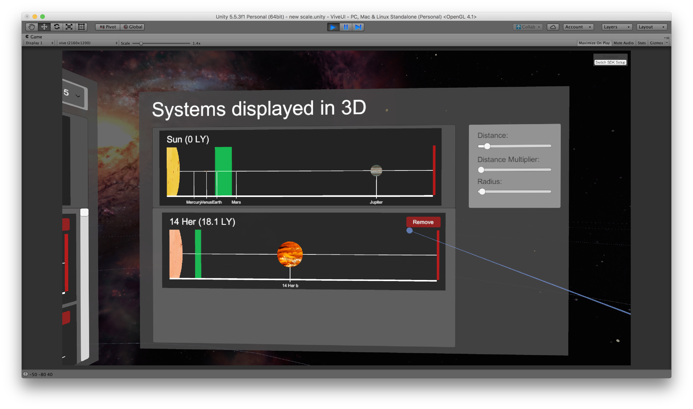
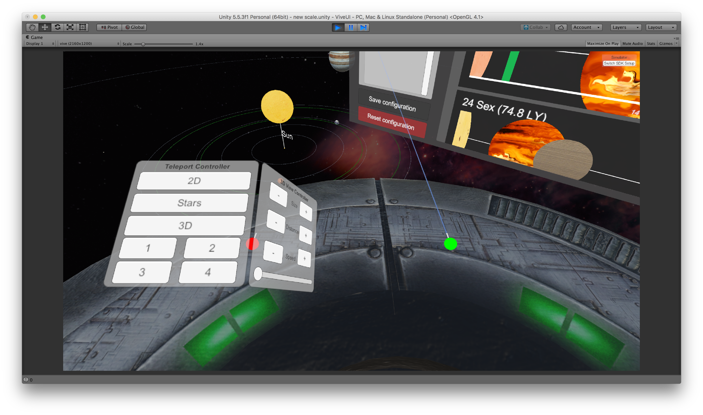

Project description
For the second project of the Virtual and Augmented Reality course we were asked to build a virtual environment on Unity3D, in which we have a 2D visualization of 590 exoplanetary systems (plus our own Solar System) that can be brought in the center of the space in 3D, in order to compare stars, planets and their orbits with our ones.
The user is on a space platform on which he/she can move around the whole space. The default view is in front of a 2D list of all the known multiplanet systems that can be seen compared to the Solar System, that is fixed on the top of the screen. Here the user can change the distance between planets, increase their radius, visualize information about systems and planets by pointing on them with the wand.
The user also has the possibility to change the 2D systems he is looking at, by switching between the tabs at the top of the screen, also selecting how many systems to show in a range from 4 to 12 (he/she can choose between systems near our Solar System, systems with most planets, systems with most habitable planets, systems with at least one star similar to our Sun and systems on which most recent discoveries where made).
Using buttons in 2D view the user can choose which systems should be shown in 3D view. He/she can select at most 4 systems other than our one and when a system is added it also appears on the list of visible 3D systems beside the 2D view. Using buttons on this list the user can choose to remove systems from 3D view. Time is passing in the 3D view and the user can appreciate how planets and stars move in the space. Furthermore he/she can compare them and customize parameters like the dimension of the planets, the size of the orbits and the speed of revolution. Habitable zone is represented in this view using two green orbits and whenever there is an earth sized planet in this area, or a bigger one with likely habitable satellites, they are highlighted with a green texture.
Another feature of the program is the 3D model representing the stars in the space. In the center of the model there is the Sun and the position of all the other stars has been chosen to make the distances between them proportioned to the real case. When the user point to an object in the model using the laser the name of the star appears and at this point the user can select the star using the trigger and the related system will be added to the 3D view. Furthermore, in the 3D model, when in the 2D view any filter is applied, the starts belonging to filtered systems are highlighted with a green texture.

As an additional feature, we added a menu to control all the parameters and move the user directly to a specified zone of the 3D space on the left wand, as it is visible on the next figure.
-
Look
At Our
Video!